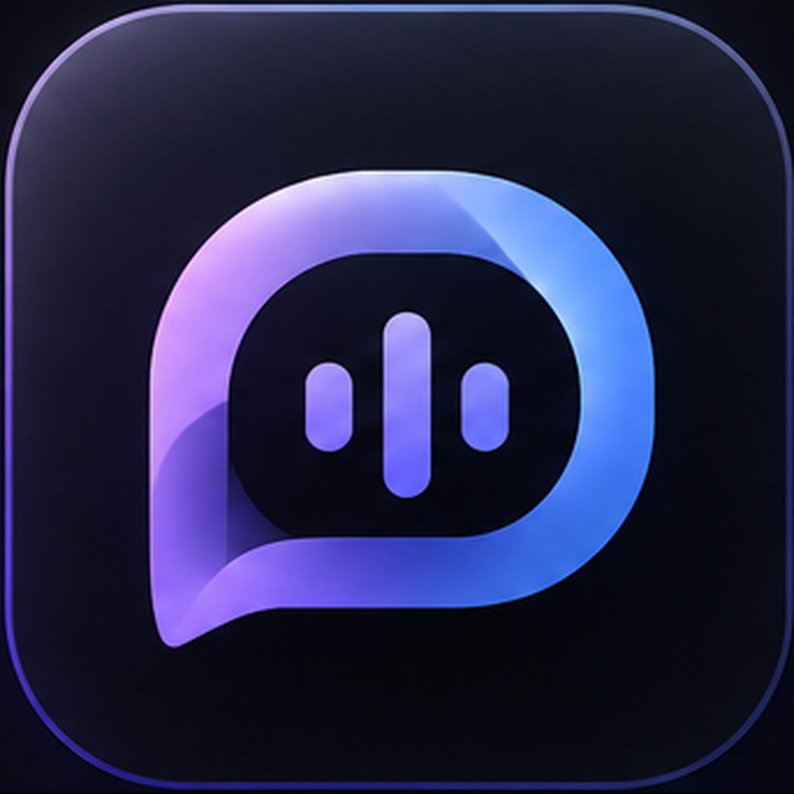
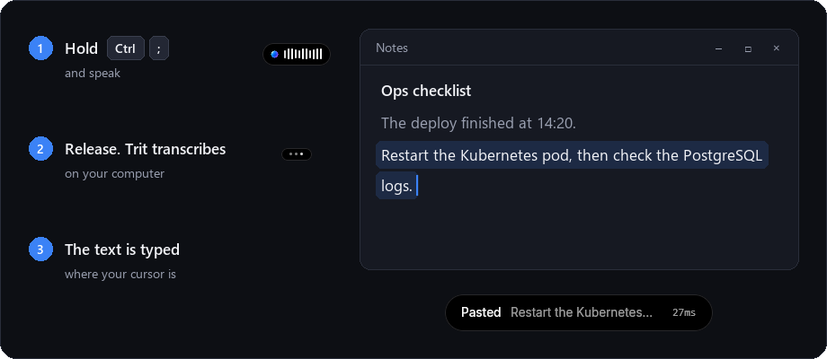
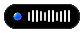
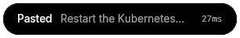
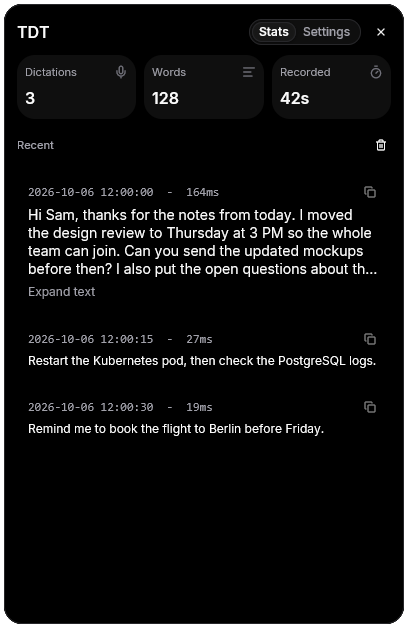
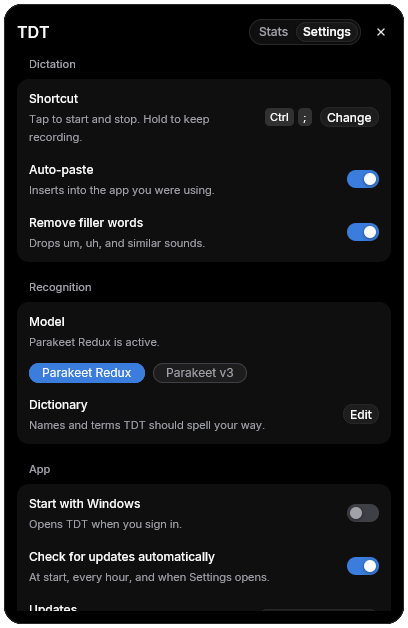

Local recognition.
Audio processing runs on your device.

TDTOffline speech to text
for Windows.
About TDT
Audio processing runs on your device.
Copy the result, or enable optional auto-paste on Windows.
Download a speech model in TDT Settings before your first Windows transcription. The initial download needs internet access.
On Windows
Captured from TDT 0.4.0

The pill

Listening, with the sound level
Pasted, with the time it tookPress Ctrl+; to start and press again to stop. Or hold the shortcut and release it when you finish.


Auto-paste types the text into the app you use, and TDT copies it too. The Stats tab keeps your recent dictations. Settings has every option.
Illustrative uses
Two everyday possibilities for text you can review and use.
Speak a first draft, then review the copied text in your notes app.
Check names, punctuation and details before you keep the draft.
Dictate your response, then review it before sending.
Check the wording and recipient before you send.
Explore TDT
Windows workflow
Prepare. Record. Transcribe. Copy.